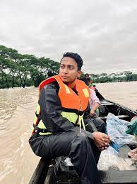
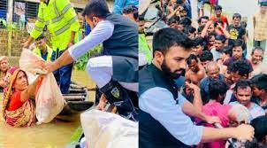
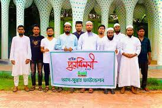

The last couple of weeks have been nothing less than hell on Earth for the residents of Sylhet and Sunamganj due to the violent flood that has shown no mercy. This devastating flood has made its place in history by showcasing its wrath, gaining the throne of the queen of all floods in the 122 years flood history of Sylhet. At this moment, more than 80% of Sylhet and more than 90% of Sunamganj is under water.

Tasrif Khan
Young singer Tashrif Khan raised a fund Rs 16 lakh for the flood victims in the early days of the floods in Sylhet. He later went live on Facebook to seek more help. A total of over 2 crore BDT has been raised by young Tasrif. So far, more than 5,000 families have been given 12-15 day worth of food and medicines thanks to his efforts.
Barrister Suman
Barrister Syed Saidul Haque Sumon collected Tk 60 lakh a day to help the flood victims of Sylhet-Sunamganj. Following the call on social media, various people from inside and outside the country sent money to him through various channels. He added that many people from inside and outside the country sent this cooperation.

Faraz Karim
Politician Faraaz Karim Chowdhury distributed the relief on behalf of the OIC. Following the floods in Sunamganj, Kurigram, Netrokona, and Kishoreganj, he once again stood by the people of the worst-hit Sylhet district. A total of 10 tons of food and daily essentials were distributed to 3,000 flood victims in Sylhet's Maynarchar, Kanaighat, Jaintapur, Companiganj, and other areas.

As sunnah Foundation
Relief materials of As-Sunnah Foundation have reached Sylhet due to severe floods. The As-Sunnah Foundation has handed over 10 tonnes of dates, 10 tonnes of chira and 10,000 liters of mineral water and 18,000 pieces of medicine in various positions to the army for medical camps. The Bangladesh Army is now distributing these among the flood victims.